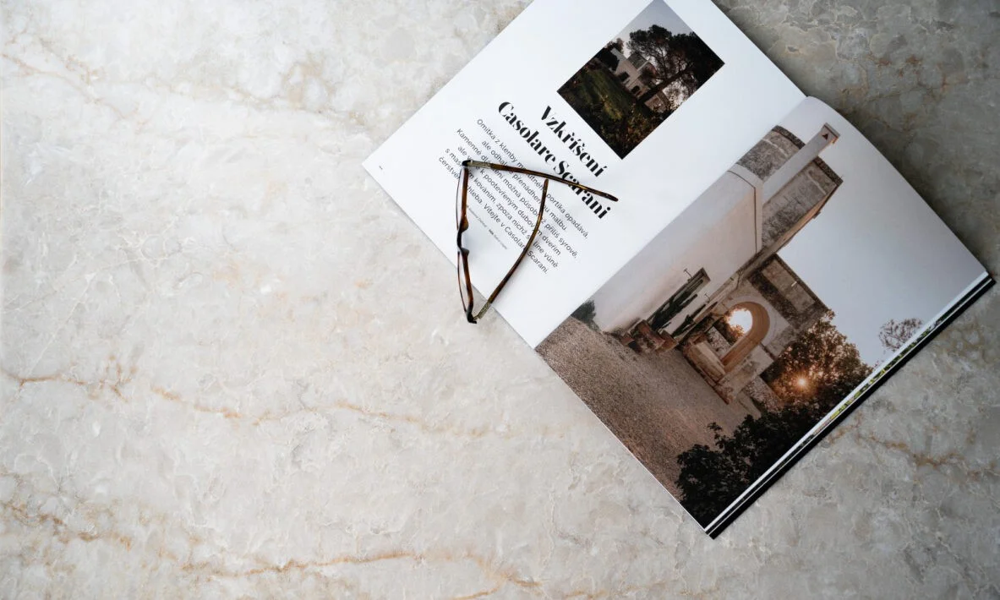
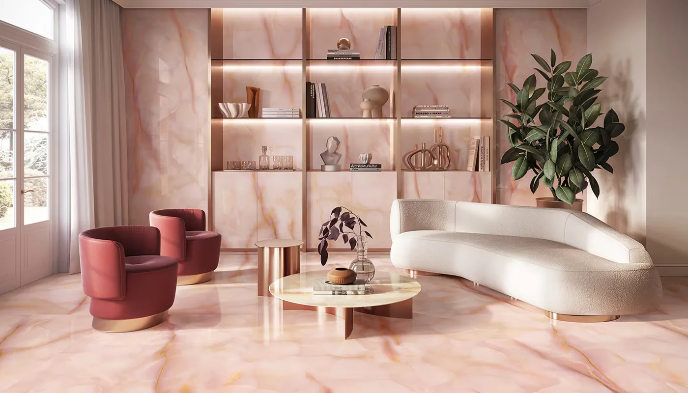
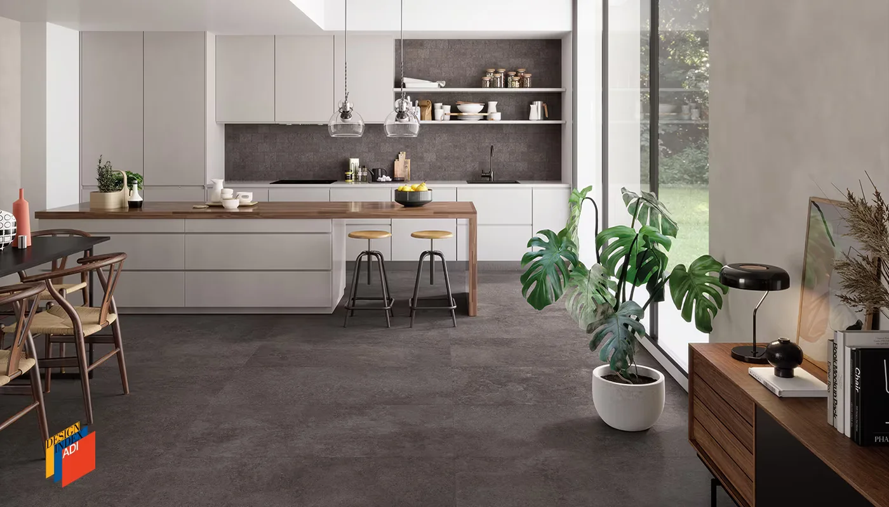
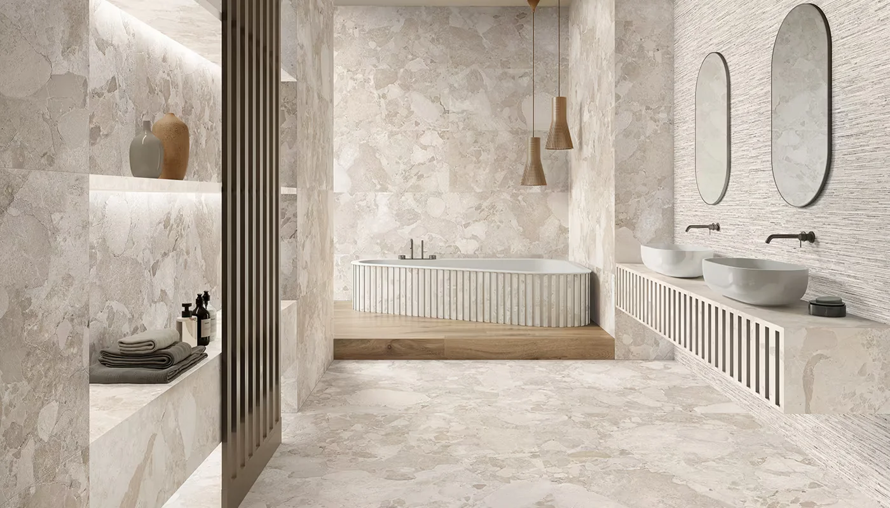
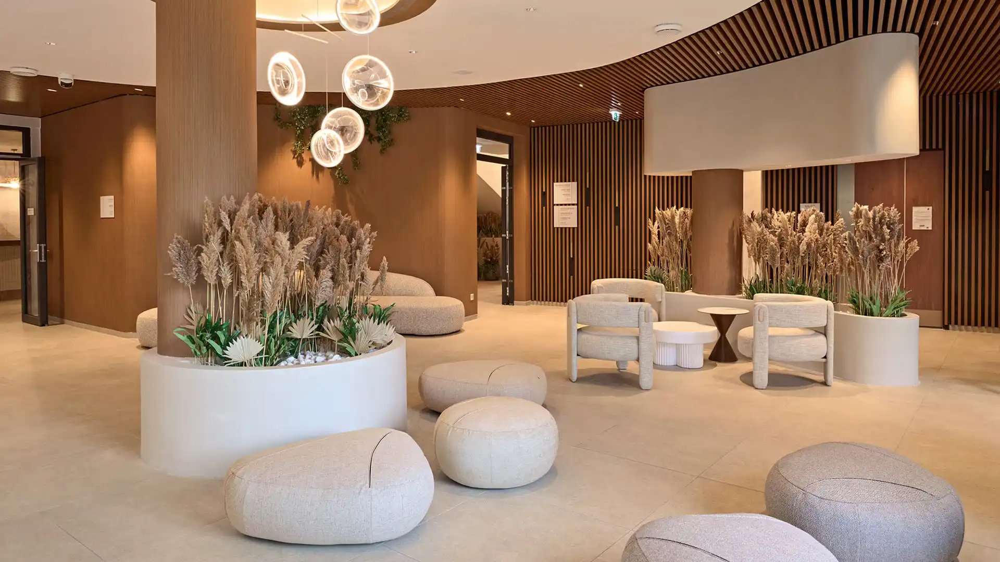

Konyhapultok, ablakpárkányok és egyéb kőfelületek szakértőiként kiváló minőségű megoldásokat kínálunk otthonod vagy üzleted számára.
Termékeink ötvözik az esztétikumot a tartóssággal és a könnyű tisztíthatósággal, így garantáltan hosszú távon élvezheted szépségüket és funkciójukat.
A Glencoe selymes fényével és finom, márványos textúrájával hoz új színt az elegancia fogalmába. Krémfehér erezete lágyan töri meg a felületet, mely fehér, bézs vagy barna tónusokkal kombinálva teremt harmonikus és megnyugtató környezetet. Időtlen választás, amely észrevétlenül válik az otthon szerves részévé.
Megtekintem

A Tele di Marmo Onyx Malva árnyalata a természetes ónix kristálytiszta rétegeit idézi, ahol a finom színátmenetek és a fény játéka lenyűgöző háromdimenziós hatást kelt. Nem csupán burkolat, hanem egy elegáns kifejezőeszköz, amely bármely helyszínt egyedi személyiséggel ruház fel.
MegtekintemAz olasz katedrálisok tiszta esztétikáját örökíti meg, ahol a történelmi múlt és a legmodernebb trendek találnak egymásra. A forradalmi SilkTech technológia selymes lágyságot ad a felületnek, miközben kiemelkedő tartósságot biztosít – nem csupán burkolat, hanem egy tapintható élmény, amely a természet nyugalmával és az itáliai falvak időtlen eleganciájával tölti meg a teret.
Megtekintem

Ez a kollekció egyetlen, méltóságteljes kőtömb karakterét örökíti meg, ahol a különböző méretű kavicsok organikus játéka tölti meg élettel a teret. A Matera Stone nem csupán egy burkolat: a nyugalom és a kifinomult ízlés háromdimenziós manifesztációja az otthonodban.
MegtekintemAhol a víz és a part összeér: a Landscape és Sixty kollekciók "Sabbia" árnyalata a tóparti homok természetes melegségét csempészi a belső terekbe. Ez a burkolat nem választ el a természettől, hanem organikus átmenetet képez a kint és a bent között. A finom, szemcsés textúra és a visszafogott elegancia tökéletes hátteret ad a pihenésnek – mintha a Balaton partja sosem érne véget.
Megtekintem